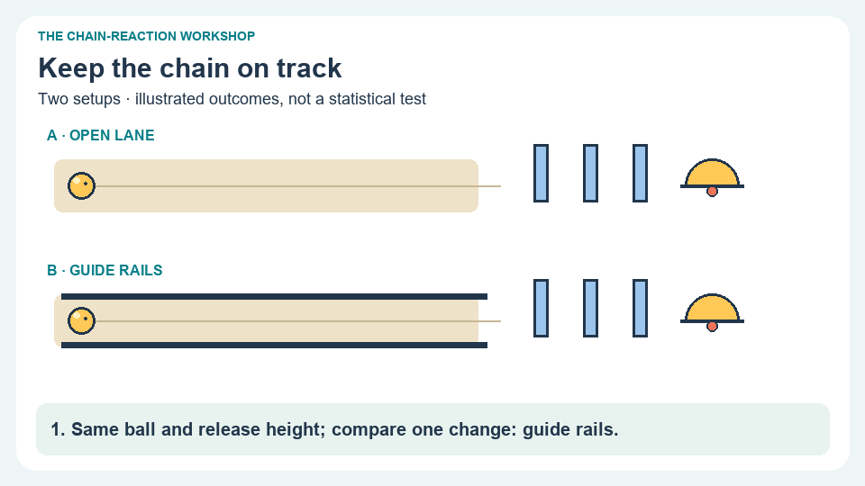

UNIT 4 · LESSON 4 · 10-SECOND CARTOON
Cartoon lab: a useful change can have a cost
Compare an open lane with guide rails. Keep the ball and release height the same.

Ready. Motion starts only when you choose Play.
Rails may improve alignment while extra contact transfers more energy into thermal energy. The bell’s sound is useful here because ringing it is the final task.
Read the sequence without motion
- Both versions use the same ball and release height. Only the guide rails change.
- The ball on the open lane drifts past the first domino.
- The guided ball contacts the dominoes, and the chain rings a bell.
- Guide contact may increase friction, so compare repeated runs and energy measurements.
In repeated trials, the rails improve complete runs from 2/5 to 4/5, but measured useful output per successful run falls from 0.30 J to 0.24 J. Total input remains 0.40 J per run. Which conclusion fits both measurements?
Your device: choose a change that could improve one criterion while making another worse. Describe how you would test it.
Original schematic cartoon. Motion is illustrative, not a physics simulation; all numbers are supplied practice measurements.